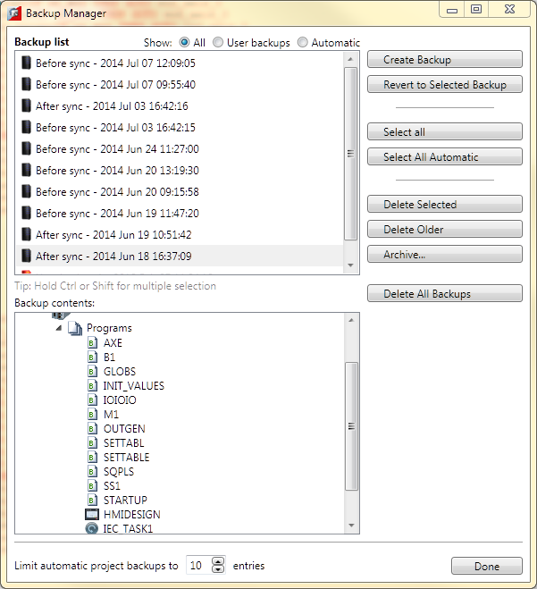

The "Backup Manager" is used to manage the backups both automatically created before and after every synchronization operation and manually created by the user. The backup contents pane shows the contents of the backup selected in the Backup List.
Every time Motion Perfect performs a synchronization two automatic backups of the project are made, one before and one after. Because of this the number of automatic backups retained is limited so as not to use excessive disk space.
The user can create a backup manually at any time by clicking on the "Create Backup" button. The number of manually created backups is not limited.
To revert the project back to a given backup; Select the backup and click on the "Revert to Selected Backup" button.
Backups can be deleted manually by selecting them in the backup list then clicking on the "Delete Selected", or "Delete Older" button.
The "Archive" button save the selected backup as a ZIP archive. This is useful if the project needs to be sent to Trio for support or to another user.